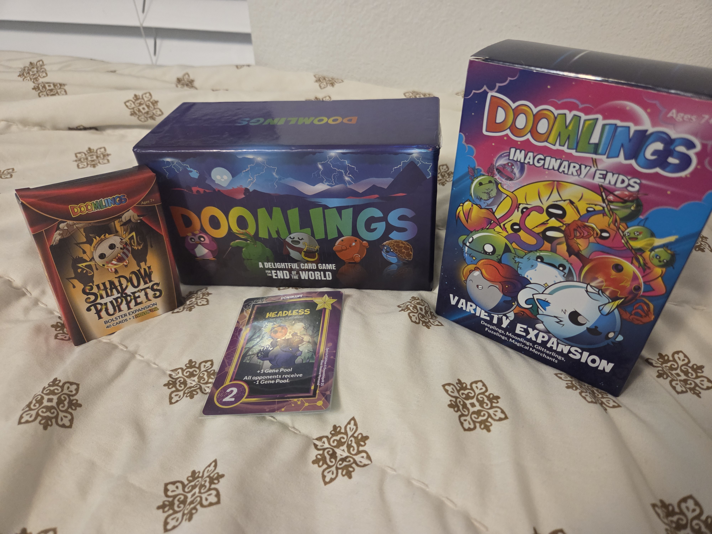
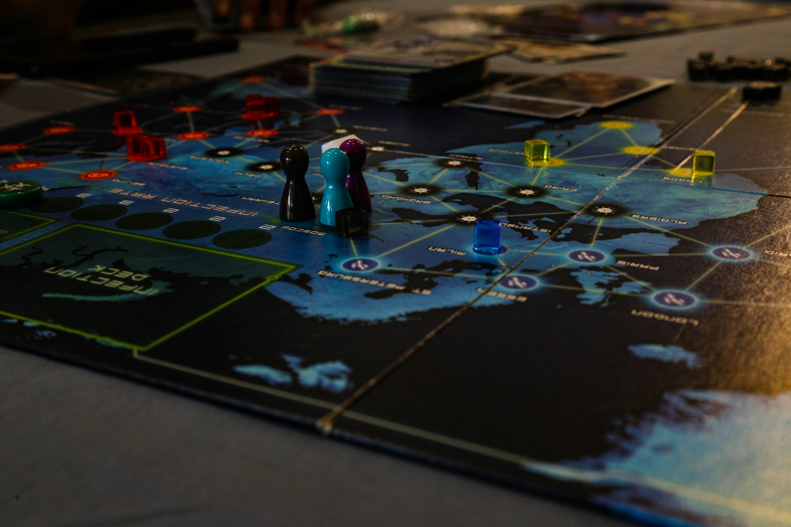

Welcome to the Games Page

A fast-paced, silly card game that’s full of laughs and surprises. What makes it truly special is that every game is different — the cards you get at the start and the events that happen during play change each time, so no two games are ever the same. It’s easy to learn, quick to play, and perfect for friends who want a fun, unpredictable game night experience.

A creative, story-driven game where players take on unique roles and work together to overcome challenges. Success requires strategic thinking, careful planning, and teamwork, all while immersing yourself in imaginative adventures. It’s perfect for friends who love collaborating, making decisions that matter, and diving into epic stories together — just make sure to have someone in your group who knows how to play to help guide everyone through the rules.

A clever, team-based word game that’s easy to learn but keeps everyone thinking. Players work together to give and guess clues, trying to find all their team’s words before the other team. It’s perfect for friends who love strategy, communication, and a little friendly competition — quick to set up and always full of laughs.

A tough, cooperative strategy game where players work together to stop global outbreaks before time runs out. There are plenty of ways to lose but only one way to win, so every move counts. It takes teamwork, planning, and a little luck to save the world — and every victory feels wellearned.